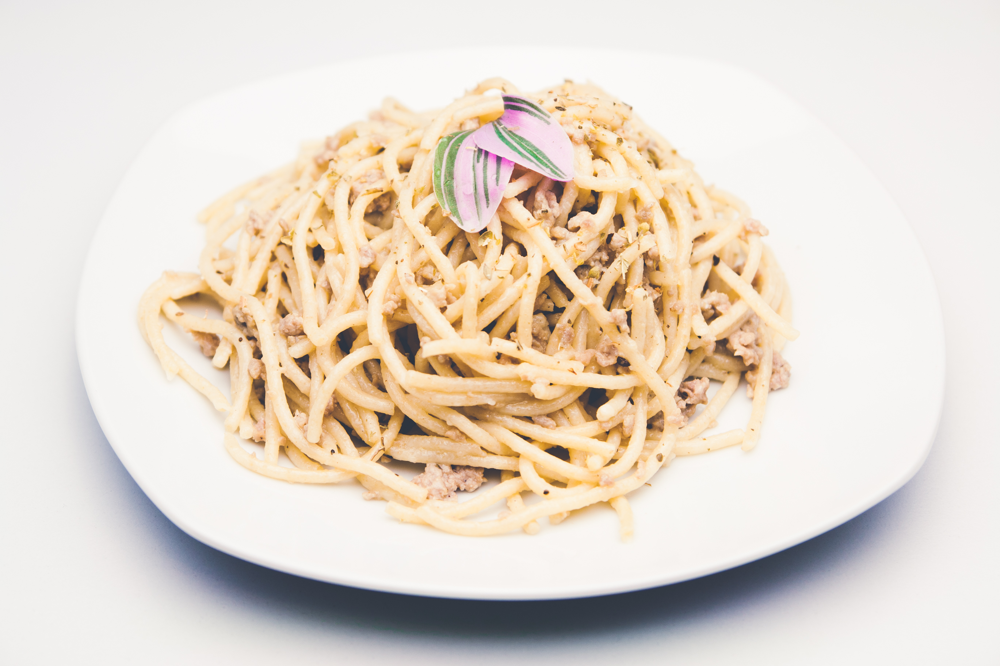

Spaghetti

Photo by Peter Belch
on StockSnap
Description
Have you ever tried a long, smooth food that goes in your mouth easily? If you have, it's a high chance
that the food you ate is spaghetti. It is not only delicious but also known in Chinese tradition to
prolong lives. If you want to live longer, eat spaghetti.
Ingredients
- 400 grams spaghetti
- 1 spaghetti sauce
- 2 tbsp oil
- 1 pc onion
- 5 cloves garlic
- 1 can corn beef
- 6 hotdogs
Steps
- First, cook the spaghetti noodles according to package directions. Drain well and set aside. Leave some pasta water for later use.
- Next, get a pan and make it nice and hot over medium heat. Pour some oil and throw in the onions and garlic. Cook until light brown. Then add corn beef and sliced hot dogs.
- Move the hotdogs and corn beef around to avoid burning. Add spaghetti sauce.
- Wait for 15 minutes and turn off the stove.
- Add the sauce to the spaghetti noodles.
- Your spaghetti is served.
Home